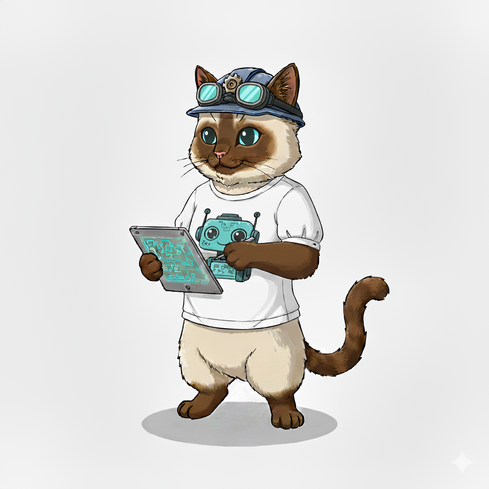
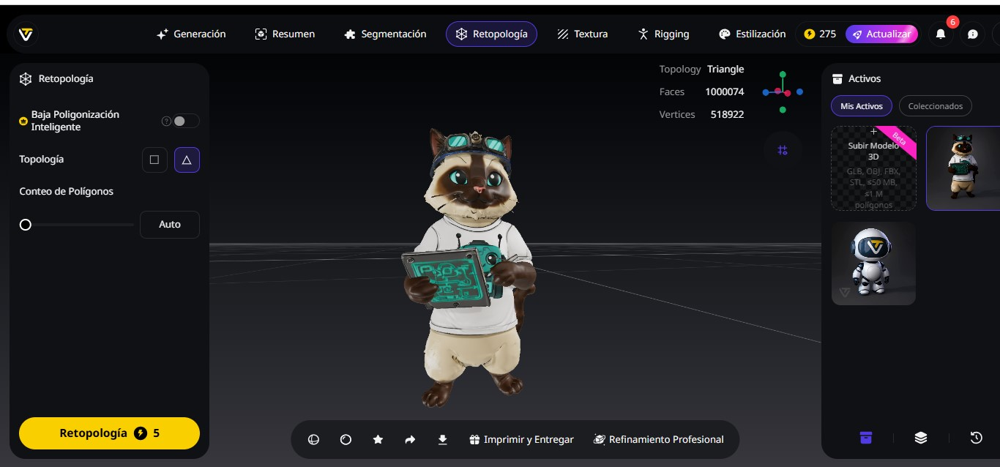
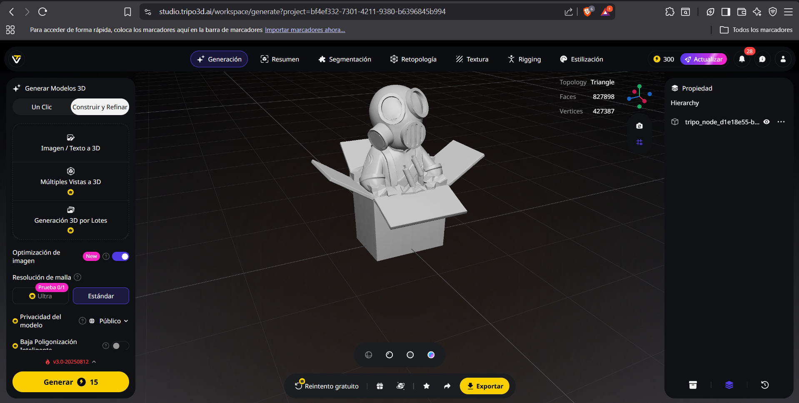

SEMANA 6 ESCANEO 3D Y DISEÑO DE PERSONAJE 3D
ESCANEO 3D-Karen
¿Qué es el escaneo 3D?
El escaneo 3D consiste en capturar la forma, tamaño y textura de un objeto o espacio real para convertirlo en un modelo digital tridimensional. Este proceso permite analizar, modificar o reproducir piezas, estructuras y entornos con gran precisión. En el IDIT, estas tecnologías se utilizan en diseño industrial, prototipado, ingeniería inversa, conservación del patrimonio y desarrollo tecnológico, facilitando la integración entre el mundo físico y el digital.
Tipos principales de escaneo 3D
1. Escaneo por luz estructurada
Este método proyecta un patrón de luz visible o infrarroja sobre el objeto, y a partir de la deformación del patrón se obtiene su geometría tridimensional. -Ventajas: alta precisión y nivel de detalle. -Usos: ideal para objetos medianos o pequeños, con formas complejas o curvas suaves. -Ejemplo: escáners "EinScan" o "Artec Eva".
2. Escaneo por triangulación láser
El escaneo láser funciona mediante la proyección de un haz de luz sobre el objeto. El sensor capta la reflexión del rayo y, mediante triangulación, calcula la posición exacta de cada punto. -Ventajas: excelente exactitud y repetibilidad. -Usos: piezas mecánicas, objetos metálicos o componentes donde cada milímetro es importante. -Ejemplo: escáners "FARO" o "Creaform HandySCAN".
3. Fotogrametría y escaneo móvil
Este tipo de escaneo reconstruye un modelo tridimensional a partir de múltiples fotografías o sensores de profundidad, como los que incorporan algunos dispositivos móviles. -Ventajas: permite digitalizar espacios grandes o zonas difíciles de alcanzar. -Usos: arquitectura, urbanismo, realidad aumentada y modelado de entornos. -Ejemplo: escaneo de áreas del campus, piezas arquitectónicas o espacios de exhibición.
Aplicaciones de escaneos 3D
Estos sistemas se integran con otras tecnologías de fabricación digital para escanear piezas físicas, corregirlas en programas CAD y posteriormente imprimirlas en 3D, mecanizarlas o analizarlas digitalmente. Esta integración permite desarrollar proyectos con mayor precisión, menor margen de error y un flujo de trabajo más eficiente desde el diseño hasta la fabricación. Es por eso que la elección del tipo de escaneo depende de las necesidades del proyecto: -Luz estructurada o láser: piezas pequeñas o con requerimientos de alta precisión. -Fotogrametría o escaneo móvil: espacios amplios, estructuras o entornos arquitectónicos.
Reflexión
El conocimiento sobre los diferentes tipos de escaneo 3D permite comprender cuándo y por qué utilizar cada tecnología según el contexto y los objetivos. Este aprendizaje no solo se limita al manejo del equipo, sino que fomenta una visión del proceso de diseño, conectando el análisis físico con la fabricación digital. Además, el escaneo 3D se vuelve importante cuando se busca llevar una idea existente en el mundo real al entorno virtual, ya sea para modificarlo, optimizarlo o reproducirlo.
Conclusión
El escaneo 3D constituye una herramienta esencial, ya que integra el diseño, la ingeniería y la fabricación digital. Asímsmo, cada tipo de escaneo ofrece ventajas específicas que permiten seleccionar el método más adecuado para las necesidades de cada proyecto, es por eso que es importante dominar estas tecnologías para comprender los procesos de innovación y enfrentar retos reales de la ingeniería. En conclusión, el escaneo 3D no solo facilita la digitalización del entorno, sino que también permite transformar la realidad en nuevas oportunidades de creación, desarrollo y conocimiento.
DISEÑO DE PERSONAJE 3D


Escaneo y Diseño de Personaje 3D Samantha
¿Qué es el escaneo 3D?
El escaneo 3D es un proceso avanzado de digitalización que captura la geometría y, en muchos casos, la textura de un objeto físico para generar un modelo tridimensional de alta precisión. Este proceso se realiza mediante dispositivos especializados —como escáneres láser, escáneres de luz estructurada o cámaras fotogramétricas— que registran millones de puntos en el espacio. Estos puntos conforman una nube de puntos que representa con fidelidad la superficie del objeto.
¿Cómo funciona?
Dependiendo de la tecnología utilizada, el escaneo 3D puede operar de diferentes maneras:
- Láser 3D: Proyecta un haz láser sobre el objeto y mide el tiempo o el ángulo de retorno para determinar la distancia. Es altamente preciso y ideal para ingeniería, manufactura y metrología.
- Luz estructurada: Proyecta patrones de luz sobre el objeto y analiza su deformación para reconstruir la forma. Ofrece alta resolución y velocidad, perfecto para objetos detallados o superficies complejas.
- Fotogrametría: Captura fotografías desde múltiples ángulos y utiliza algoritmos para reconstruir un modelo 3D. Es flexible, económica y útil para entornos grandes o proyectos artísticos.
¿Qué se obtiene?
Tras el escaneo, todos los puntos registrados se procesan en software especializado, generando:
- Nube de puntos
- Malla 3D (mesh)
- Modelos texturizados
- Superficies editables (NURBS) según el proyecto
Estos modelos pueden exportarse en formatos como STL, OBJ, PLY, FBX o STEP, listos para impresión 3D, análisis de ingeniería, realidad aumentada/virtual, videojuegos, arquitectura, diseño industrial, entre muchas otras aplicaciones.
¿Para qué se utiliza?
El escaneo 3D permite:
- Digitalizar objetos para ingeniería inversa
- Crear réplicas exactas mediante impresión 3D
- Analizar deformaciones o desgaste con inspección metrológica
- Preservar arte y piezas históricas mediante digitalización patrimonial
- Generar modelos realistas para cine, animación y videojuegos
- Capturar personas para avatares 3D, moda digital o VR
DISEÑO DE PERSONAJE 3D
